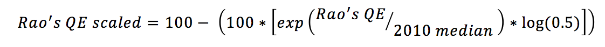

Draft, 8/18/17
Nutritionists consider diversity of food consumption an important component of a healthy diet. Elements of diversity include diversity of food intake within a day, across several days, for the average diet. And it includes diversity of individual food items as well as from food groups and staples and non-staples.
This tab shows Rao's quadratic entropy metric. Rao's quadratic entropy measure of diversity is based on the Euclidian distance between nutrient adequacy for pairs of food items, weighted by the product of the shares of each food item in total mass of food. It is superior to the Shannon Diversity metric because it takes into account relative diversity by weighting availability shares; however, like the Shannon Diversity metric, it implicitly values all nutrients equally.

In the figures in this tab, Rao's quadratic entropy values are scaled from 0 to 100 across all countries, years and scenarios using the following formula.
